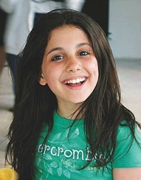

|

|

|

|
1993-2008: Primeros años e inicios de su carrera artística.
|
|
Nació el 26 de junio de 1993 en Boca Ratón (estado de Florida).
Se le llama así en alusión a la princesa Oriana, de la caricatura Félix el Gato. Tiene nacionalidad estadounidense, italiana y británica.
Asistió a las escuelas Pine Crest School y North Broward Preparatory School. Desde la niñez sufre de hipoglucemia, por lo que tiene que comer dulces para
fortalecer sus energías. Es hija de Joana Grande y Edward Butera
Tiene un medio hermano diez años mayor que ella, llamado Frankie Grande, quien también es actor y bailarín, además de productor.
ellos comparten la misma madre, pero distintos padres.
Nació en Florida después que sus padres abandonaron Nueva York cuando Joana estaba embarazada. Cuando Grande tenía once años de edad, sus padres se
separaron. Sufrió mucho desde entonces, se sentía como si estuviera en el medio de los dos, y eso la ponía depresiva. Finalmente, se
quedó bajo el cuidado único de su madre, junto a su hermano y sus abuelos maternos, a quienes describe como una «inspiración».
En su infancia, Grande interpretó el personaje Annie en el teatro para niños Fort Lauderdale,siendo este su primer papel,
así también participó en otros musicales como The Wizard of Oz y Beauty and the Beast.
|

|

|
A los ocho años de edad, estuvo de vacaciones junto a su familia en un crucero donde optó por cantar en un salón de karaoke. Nadie de su
familia se había dado cuenta que la artista cubana Gloria Estefan estaba cerca, y que la estaba escuchando cantar.
Luego que terminó, Estefan se acercó a Grande después de pedir permiso para hablar con ella, asombrada la felicitó, y le dijo que debería seguir en la música porque
«estás destinada para esto».
Desde muy chica mostró gran talento en la música y el baile, cantó para orquestas como South Florida's Philharmonic,
Florida Sunshine Pops y Symphonic Orchestras, e hizo su presentación debut en la televisión nacional con el himno de los Estados Unidos
«The Star-Spangled Banner» para Florida Panthers.A los 12 años, pensó seriamente en iniciar una carrera musical,
aunque todavía se concentró en el teatro. Cuando llegó por primera vez a Los Ángeles para conocer a sus representantes, ella expresó su deseo de grabar un álbum
de R&B cuando tenía 14 años: «Yo estaba como, "quiero hacer un álbum de R&B", y ellos dijeron "Um, ¡eso es una meta intensiva! ¿Quién va a comprar un álbum R&B
de una niña de 14 años de edad?"».
Poco después audicionó para el musical 13 de Broadway con el personaje de Charlotte. Allí ganó el primer reconocimento
de su carrera, cuando la National Youth Theatre Association Awards la premió con el galardón a la mejor actriz de reparto, reconociendo su excelente desempeño en el musical.
Cuando se unió al musical, tuvo que distanciarse de la escuela, pero siguió inscrita. La escuela le enviaba los materiales para que ella pudiera estudiar con tutores.
|
|